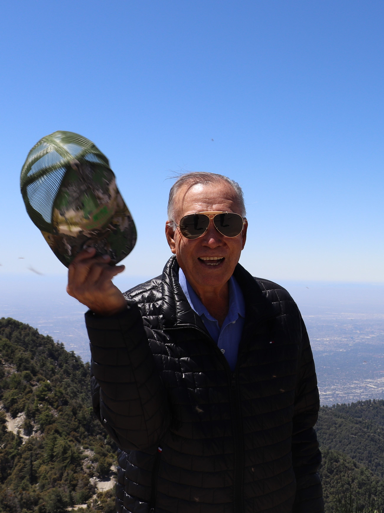

1
1
1
Nuestra historia se expande a lo largo de cuatro generaciones,
comenzando con Nicolás Vega. Como parte del programa de braceros,
Nicolás emigró a California, Estados Unidos, donde empezó a
dedicarse a la agricultura. Sentando las bases de una tradición
familiar agricola que continuaria por mas de siete decadas.
Tras adquirir experiencia en la gestión del rancho, Aristeo Vego, hijo mayor de Nicolas Vega, decidio emprender su propia empresa agrícola junto a sus hermanos. Dando inicio a Vega Brothers, una empresa dedicada al cultivo de jitomates en Carlsbad, California. Gracias al esfuerzo y dedicación de los hermanos Vega, la empresa, que comenzó con una simple mesa de billar para clasificar los jitomates, se expandió rápidamente, llegando a emplear a cientos de trabajadores.
En 1980, después del éxito empresarial obtenido con Vega Brothers, Aristeo Vega regresaria a Jalisco, México donde adquiriria un rancho y comenzaria a cultivar diversos productos agrícolas. Fue así como se estableció la Agropecuaria La Soledad de Vega como renombre agricola en la region de Jalisco.
Tras adquirir experiencia en la gestión del rancho, Aristeo Vego, hijo mayor de Nicolas Vega, decidio emprender su propia empresa agrícola junto a sus hermanos. Dando inicio a Vega Brothers, una empresa dedicada al cultivo de jitomates en Carlsbad, California. Gracias al esfuerzo y dedicación de los hermanos Vega, la empresa, que comenzó con una simple mesa de billar para clasificar los jitomates, se expandió rápidamente, llegando a emplear a cientos de trabajadores.
En 1980, después del éxito empresarial obtenido con Vega Brothers, Aristeo Vega regresaria a Jalisco, México donde adquiriria un rancho y comenzaria a cultivar diversos productos agrícolas. Fue así como se estableció la Agropecuaria La Soledad de Vega como renombre agricola en la region de Jalisco.
